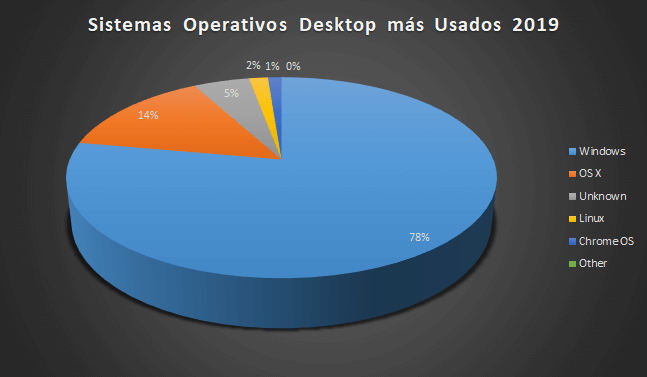

Las disputas entre desarrolladores de Sistemas Operativos siempre están al día, por lo que compiten entre ellos de forma constante buscando superar al resto, aquí tenéis un punto en el que Mac, Linux y Windows son mejores.
Las disputas entre desarrolladores de Sistemas Operativos siempre están al día, por lo que compiten entre ellos de forma constante buscando superar al resto, aquí tenéis un punto en el que Mac, Linux y Windows son mejores.
Con un Mac no es necesario instalar ningún antivirus y todo lo que ello no comporta. Últimamente han aparecido algunos pocos virus para Mac, seguramente debido a que es una plataforma que se ha extendido en los últimos años. Apple lanza actualizaciones de su sistema operativo, corrigiendo posibles anomalías en su sistema que puede hacerlo vulnerable a estos virus.
Linux es libre: Esto implica no sólo la gratuidad del software, sino también que Linux es modificable y que Linux tiene una gran cantidad de aplicaciones libres en Internet. Todo ello arropado por la inmensa documentación de Linux que puede encontrarse en la Red.
Debido a la cantidad de aplicaciones que son muy compatibles con los sistemas operativos Microsoft Windows, los usuarios ya no tienen que preocuparse por elegir una aplicación. Hay muchos tipos diferentes de aplicaciones.compatible con Microsoft Windows, que es como el reproductor de música para la aplicación de superusuario que se puede utilizar y que es útil para crear un programa que ya está disponible en la plataforma Microsoft Windows. Con tal competitividad, muchas aplicaciones son muy diversas, desde gratuitas hasta de pago.
Y para aclarar cual es más usado, les dejo una gráfica que responde esa cuestión.
